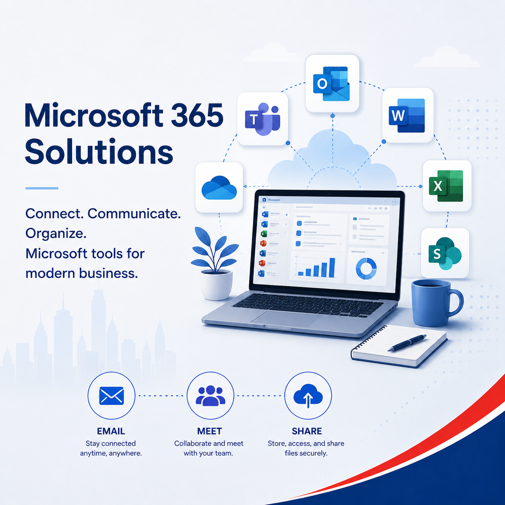

Users, mailboxes and cutover
We review accounts, aliases, groups, old mail and the best timing for the change.
Move your company email from Gmail and Google Workspace to Microsoft 365 with a clear migration plan, DNS cutover, Exchange Online setup, Outlook support and post-migration checks.

We review accounts, aliases, groups, old mail and the best timing for the change.
We help update mail flow and sender authentication records for Microsoft 365.
We assist with Outlook, mobile email, account testing and user guidance after the switch.
Axon explains what changes, what staff must do and how mail access will work after migration.
Google to 365 email migration, Google Workspace to Microsoft 365 migration, Gmail to Outlook business email migration and Exchange Online setup Singapore.